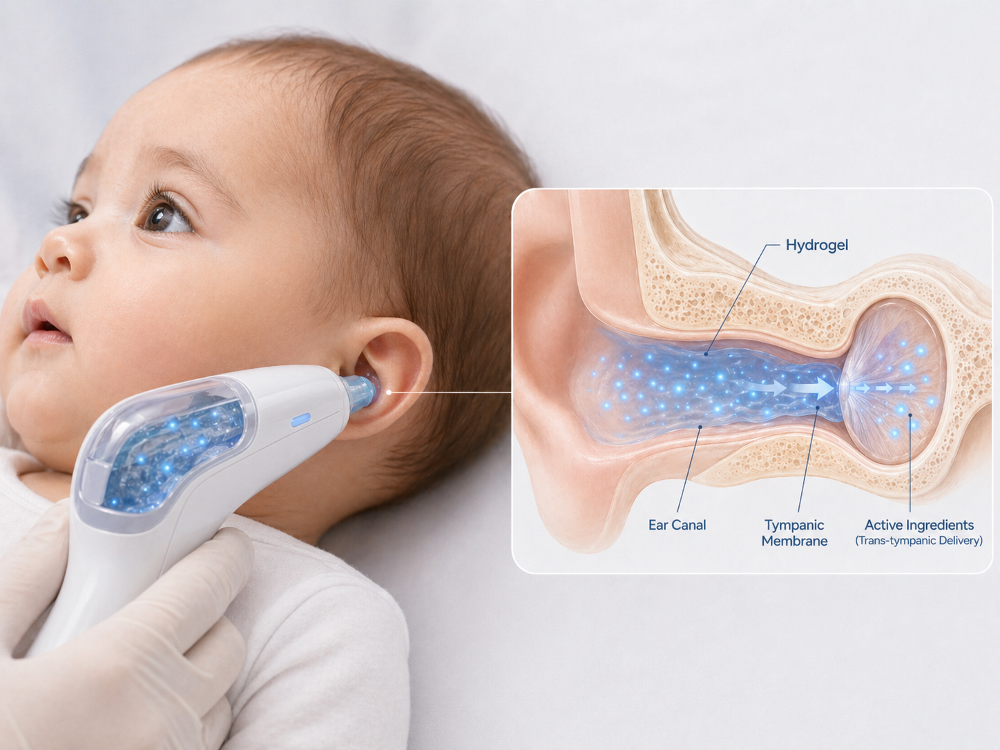
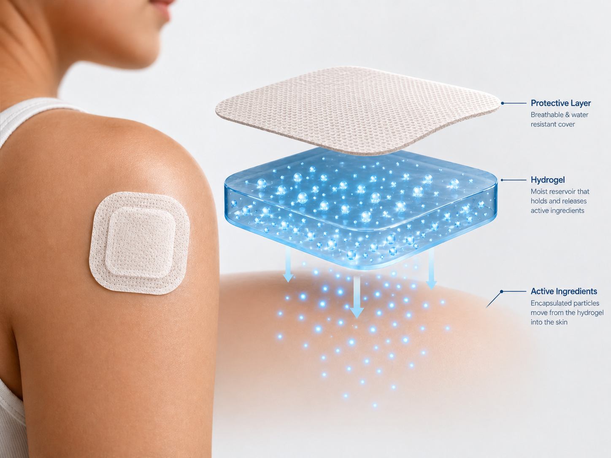
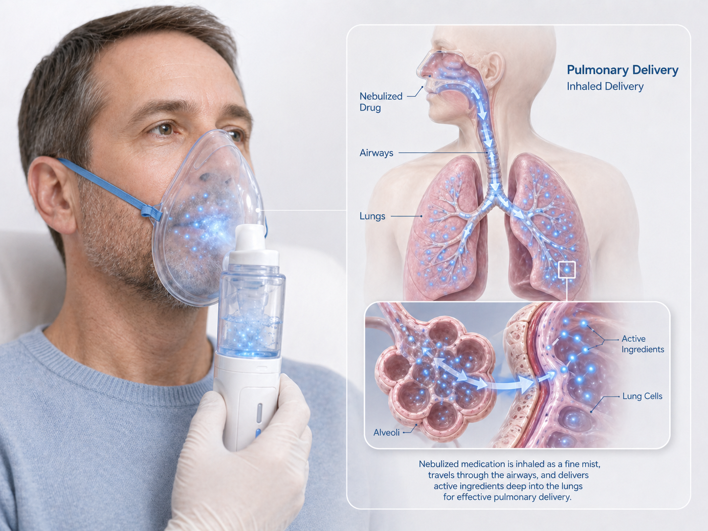
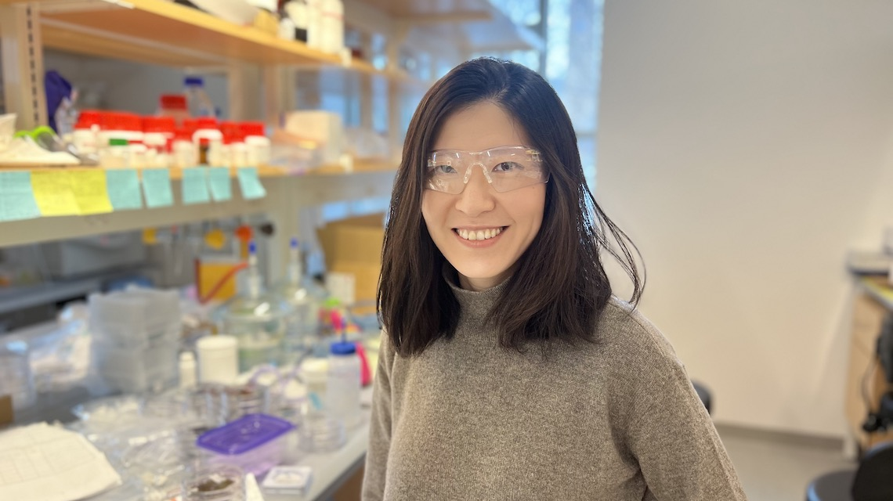
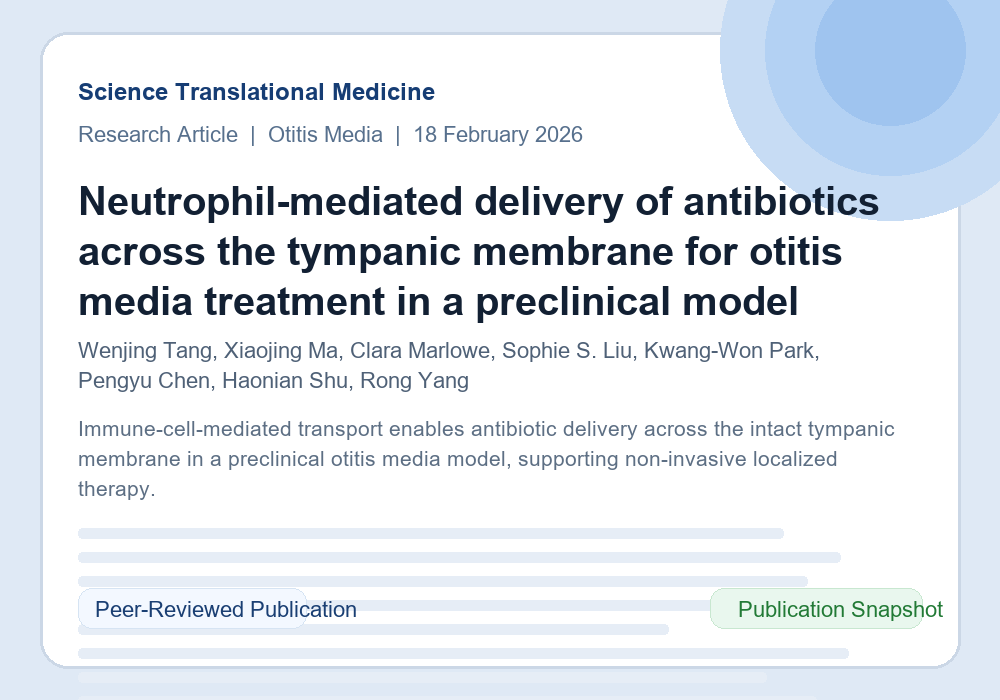

Scientific Breakthrough
Our team discovered that immune cells possess "VIP access" to actively traverse biological barriers, even dead skin, that block passive drug diffusion.



Non-invasive trans-barrier delivery
OTO Biotech builds a proprietary immune-mediated drug delivery platform featuring non-invasive administration, active barrier-crossing transport, and targeted delivery to minimize systemic exposure and expand across multiple modalities and indications.
Platform

Our team discovered that immune cells possess "VIP access" to actively traverse biological barriers, even dead skin, that block passive drug diffusion.
We developed proprietary liposomes that "hitchhike" on these immune cells by mimicking the body's natural C3b complement tagging process.
Our platform is compatible with a broad range of payloads, including antibiotics, proteins, and vaccines. It enables non-invasive localized delivery across multiple anatomical sites and diverse clinical indications.
Pipeline
Program Highlight
Solving the #1 Cause of Pediatric Antibiotic Overuse
acute otitis media cases are recorded in the U.S. each year, with 11.5 million occurring in children under 5.
Tong et al., BMC Health Serv. Res. 18(1) (2018)
of antibiotic prescriptions written for children in the United States are driven by acute otitis media.
Frost et al., J. Pediatr. 240, 221-227.e9 (2022)
is spent annually treating otitis media in children under 5 across the United States alone.
Lin et al., Front. Public Health 14, 1694807 (2026)
OTO-101:
Roadmap
Leadership
CEO & Co-Founder
MIT-trained scientist and operating lead focused on execution, strategy, and company building.

CSO & Co-Founder
Cornell biomaterials expert and scientific founder behind the platform's core discovery and translational direction.
Chief Technology Officer
Lead discovery scientist advancing the immune-mediated delivery mechanism and formulation platform.
News

Science Translational Medicine
OTO Biotech’s core mechanism was recently reported in Science Translational Medicine, demonstrating neutrophil-mediated delivery of antibiotics across the tympanic membrane in a preclinical model of otitis media.
View PublicationContact
Partnership, investor, and scientific inquiries.